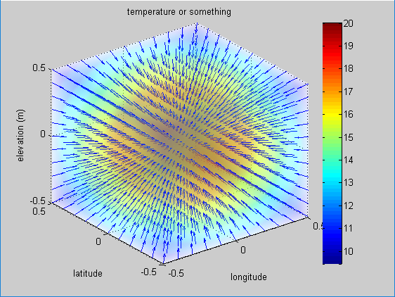
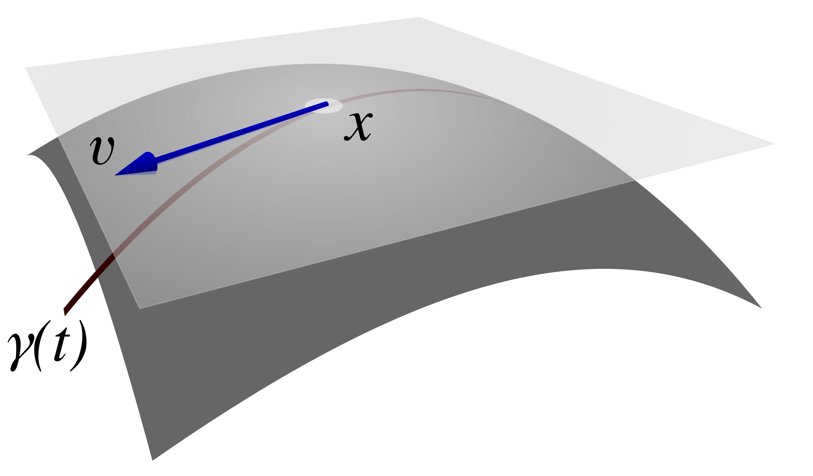

(i) Total derivative & Gradient
1. Total derivative for parameter variables
다변수 함수에 대한 전미분은 아래와 같다. 여기에서, 매개변수(예: 매개변수 좌표, 시스템을 기술하는 독립 변수 등)를 $u_i$ 라고 하자.
$$ df =du_i\frac{\partial f}{\partial u_i} $$위 식을 벡터로 표현하면, 아래와 같다.
$$ df =d\vec{u}\cdot\nabla_u f $$$$ \nabla_u =\left[\frac{\partial}{\partial u_1}, \frac{\partial}{\partial u_2}, \frac{\partial}{\partial u_3}\right]_T $$여기에서 $f$ 를 제거하면, 유용한 관계식을 얻을 수 있다. (수학적으로 엄밀한 연산자 정의라기보다는, 전미분 연산자를 간략하게 표현하는 매우 유용한 방법이다.)
2. Total derivative for real space variables
이번에는 실공간의 좌표를 사용하여, 전미분을 알아보자. 위에서, 매개변수에 대한 전미분은 아래와 같이 쓸 수 있음을 보였다.
$$ df =du_i\frac{\partial f}{\partial u_i} $$$\vec{v}$는 실공간에서 변위벡터이고, 이 변위벡터의 성분 $v_k$는 매개변수 $u_i$ 의 함수로서 표현된다. 연쇄법칙을 적용하면,
$$ df =du_i\left(\frac{\partial f}{\partial v_k}\frac{\partial v_k}{\partial u_i}\right) =\left(\frac{\partial v_k}{\partial u_i}du_i\right)\frac{\partial f}{\partial v_k} $$따라서,
$$ df =dv_k\frac{\partial f}{\partial v_k} =d\vec{v}\cdot\nabla_v f $$위와 마찬가지로 $f$ 를 제거하면, 유용한 관계식을 얻을 수 있다. (수학적으로 엄밀한 연산자 정의라기보다는, 전미분 연산자를 간략하게 표현하는 매우 유용한 방법이다.)
$$ d :=d\vec{v}\cdot\nabla_v $$이전과 비교하면, 어떠한 함수의 전미분은 매개변수 공간에 대응되는 실공간의 변수로 표현해도 동일함을 알 수 있다.
3. Gradient for scalar
(1) 방향 도함수 해석
gradient 의 특성을 엄밀하게 해석하는 방법이다. 임의의 위치에서 gradient 와 그 위치에서의 임의의 단위벡터를 내적해보자.
$$ \nabla_q f \cdot \hat{l} = |\nabla_q f|\cdot1\cdot\cos\theta $$$\nabla_q f$의 크기를 생각하면, $\cos\theta=1$ 이 되어야 하므로 $\theta=0$ 이다. 따라서, $\nabla_q f$의 특성은 공간상의 기울기가 최대가 되는 방향임을 알수 있다.
(2) 등고선 or 등위면 해석
등위면이나 등고선 해석은 (1)의 방법보다 gradient 의 기하학적 의미를 ‘시각화’하고 ‘직관적’으로 이해하는 데 매우 유용하다. (단, 이 방식은 등위 값을 가질 때 적용할 수 있다.) 등고선은 같은 값을 선으로 연결한 형태를 의미하고, 등위면은 같은 값을 면으로 연결한 형태를 말한다. 공간 $q$에 대해 수식으로 표현하면, 다음과 같다.
$$ f(q_1,q_2,q_3)=c,\quad \text{단, c는 상수} $$전미분을 수행한다.
$$ df=d\vec{q}\cdot\nabla_q f=0 $$여기에서 중요하게 생각해야 할 지점이 있다. $f=c$ 이라고 해서, $\nabla_q f=0$ 이 아닐 수 있다는 점이다. 이것은 자칫하면 오해할 수 있는 부분으로, 꼭 기억하자.
$df=0$이 되려면, $d\vec{q}$ 와 $\nabla_q f$ 는 서로 수직이어야 한다. $d\vec{q}$는 등위면 상에 존재하므로, $\nabla_q f$는 등위면과 수직이다. 어떤 지점에서 함수 $f$의 값을 가장 빠르게 변화시키려면, 함수 값이 변하지 않는 등위면의 접선 방향이 아닌, 등위면에 수직인 방향으로 이동해야 한다. 마치 언덕에서 등고선을 따라가면 높이 변화가 없지만, 등고선에 수직으로 올라가면 가장 가파른 경사를 만나는 것과 같다. 이는 위(1)의 결과와 연결시켜 생각하면 이해하기 쉽다.
아래 그림은 구 대칭 형태로 온도가 분포할 때며, gradient 연산 결과의 방향은 방사 방향에 해당함을 확인할 수 있다.
4. Gradient for vector
전미분 연산자를 사용하여, 미소변위벡터를 표현해 보자.
$$ d\vec{v} =d\vec{u}\cdot\nabla_u\vec{v} =du_i\frac{\partial \vec{v}}{\partial u_i} =\vec{h}_idu_i $$이것을 매개변수공간의 벡터와 실공간으로 해석하면, $d\vec{u}$ 는 매개변수 공간의 미소변위벡터이다. ‘$\cdot\nabla_u\vec{v}$‘는 이 매개변수공간의 미소변위벡터를 실공간의 미소변위벡터 $d\vec{v}$ 로 변환하는 연산자로 볼 수 있으며, 2계 tensor 형태인 Jacobian 행렬이다.
$$ \vec{h}_i =\frac{\partial \vec{v}}{\partial u_i} $$위 식의 의미를 자세하게 살펴보자. Jacobian 행렬의 각 열벡터에 해당하며, 이는 매개변수 공간의 기저(직교 단위 벡터) $\hat{u}_i$가 실공간에서 $\partial \vec{v}/\partial u_i$ 의 기저로 변환되었음을 나타낸다. $\partial \vec{v}/\partial u_i$ 의 기하학적 의미는 상당히 중요하다. 실공간에서, 매개변수 $u_i$의 변화에 따라, $\vec{v}$는 이동 궤적을 형성하게 된다. $\partial \vec{v}/\partial u_i$는 이동 궤적의 접선 벡터임을 알 수 있다. 추후, 공변기저백터로 사용된다. 아래 이미지의 벡터 표기는 궤적에 대한 접선벡터를 보여준다.
